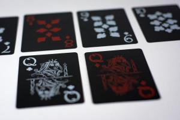

Jesteś grafikiem/informatykiem? Chciałbyś dostać możliwość wyjazdu i reprezentowania uczelni na rożnych wydarzeniach organizowanych w kraju i zagranica? Chciałbyś poszerzyć swoja wiedzę oraz umiejętności praktyczne i teoretyczne, które są cenione na rynku pracy?
Jeśli tak, to kolo naukowe HashCode jest świetnym miejscem dla Ciebie. Właśnie rozpoczynamy rekrutację.
Spotkanie rekrutacyjne odbędzie się 12.10.2018 o 17:00 w sali 116.
Zapisy do Sekcji Brydża Sportowego

Serdecznie zapraszamy do udziału w Sekcji Brydża Sportowego. Do Sekcji mogą zapisywać się osoby, które już grają w brydża oraz te, które dopiero chcą nauczyć się grać.
Brydż jest grą logiczną, która rozwija nie tylko zdolności analitycznego myślenia ale również działania kooperacyjne. Z tego powodu w wielu szkołach Europy brydż jest takim samym przedmiotem szkolnym jak matematyka czy język obcy. Ta gra jest też po prostu przyjemnym sposobem na spędzenie wolnego czasu i zawarcie nowych znajomości.
Zapisy przeprowadza dr inż. Stanisław Szejko.
Daty i godziny spotkań zostaną dostosowane do planu zajęć zainteresowanych.